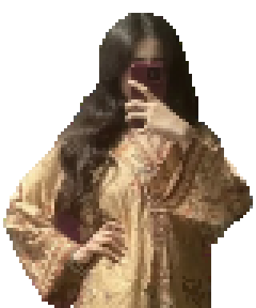
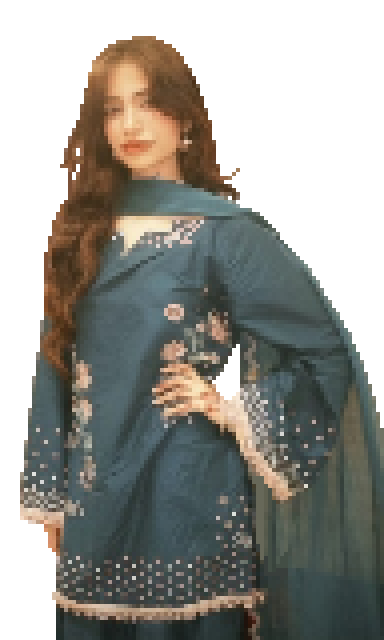

Okay I don't want this to be insensitive and I mean this in the most respectful way, I know you haven't celebrated properly since Dad returned to Allah and I know you miss him a lot. Honestly the way you talk about him makes me miss him too, even though I don't know much about him, I would like to learn as much as I can because I know it means a lot to you. I can't fully understand your grief but I can sit with you through it all and my shoulder is always all yours. I know he is a great man, I mean he married your amazing Mama and created you, a whole angel, together 🤗 and you are just as amazing if not more. I wish I could 've known him, but issokay, I will always pray for his soul and I 'm sure he's watching over you and is proudest of you from the highest rank in Jannah :) I 'm glad you have Amma and Shaheer and your whole gang around you, I wish I could be there for you more and that's why I 'm grateful for them because I know they're always there for you and they too love you for who you are. I know it's been really difficult for you these days

but I 'm genuinely proud of you for hanging on and doing your best. Things will get better and you'll get into the university you want to and accomplish everything that you want to inshallah, time will fly trust me :) I believe in you! And we must trust in Allah 's plan no matter what happens, Allah sees everything and He knows what's best for us and I want you to know that you're not falling behind in life or on the wrong path or anything silly like that. Everyone's journey is different but one thing I know for sure is that wherever you are and whatever you're doing I know you'll ace it. You will surely be rewarded greatly for simply being your beautiful self and for everything else in your life. I will always worry and think about you all the time dumbass, I hope you'll continue taking care of yourself and even if life feels difficult I want you to try your best to stay healthy and happy, physically and mentally as well, for yourself, for me and for everyone else who loves and cares about you bhondu. Remember, you're never alone :) It's okay to not be okay sometimes, that doesn't mean I 'm gonna leave you and go anywhere else,
that's stupid. Aap se hi meri rooh ko sukoon hai, aap hi mera kul dil hai, aur aap hi meri panaah-e-jaan hai. I will never ever leave you alone (threat) You are most important to me and you'll always be my first priority. I 'll always be grateful that you exist. Knowing you makes me realize that prayers really do get answered. You feel like a beautiful dua of mine that finally came true. And I hope I can be the same to you. I love you Samahir Fatima Ali. And yes I LOVE your whole name 🤗 Okay no more yap 😭 let's pray earnestly today and be charitable and may Allah forgive our sins and answer all your duas, grant you health and prosperity and surround you with every good thing in the universe because you deserve no less ameen 🤍